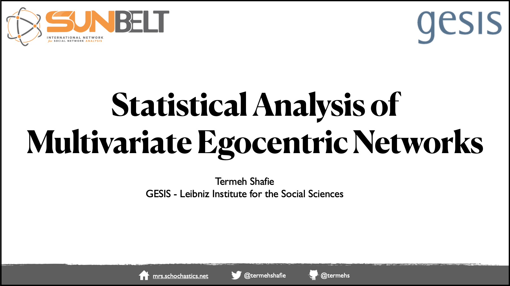

About me
Projects
Publications
Talks
Blog
Categories
All
(6)
entropy
(2)
multigraph
(5)
Talks
“Analyzing Social Structure using Multigraph Representations”
Presentation @ Centre Marc Bloch, Berlin
Nov 2, 2022

“Statistical Analysis of Multivariate Egocentric Networks”
The XLII Social Networks Conference of INSNA
Jul 15, 2022
“Statistical Entropy Analysis of Network Data”
The Women in Network Science (WiNS) seminar
May 5, 2022
Multiplexity Analysis of Networks using Multigraph Representations
The 5th European Conference on Social Networks
Sep 7, 2021
“Goodness of Fit Tests for Random Multigraph Models”
Network 2021 - A Joint Sunbelt and NetSci Conference
Jul 6, 2021
“Gender Dependent Structures of Dialogue Networks in Films”
The 4th European Conference on Social Networks
Sep 9, 2019
No matching items